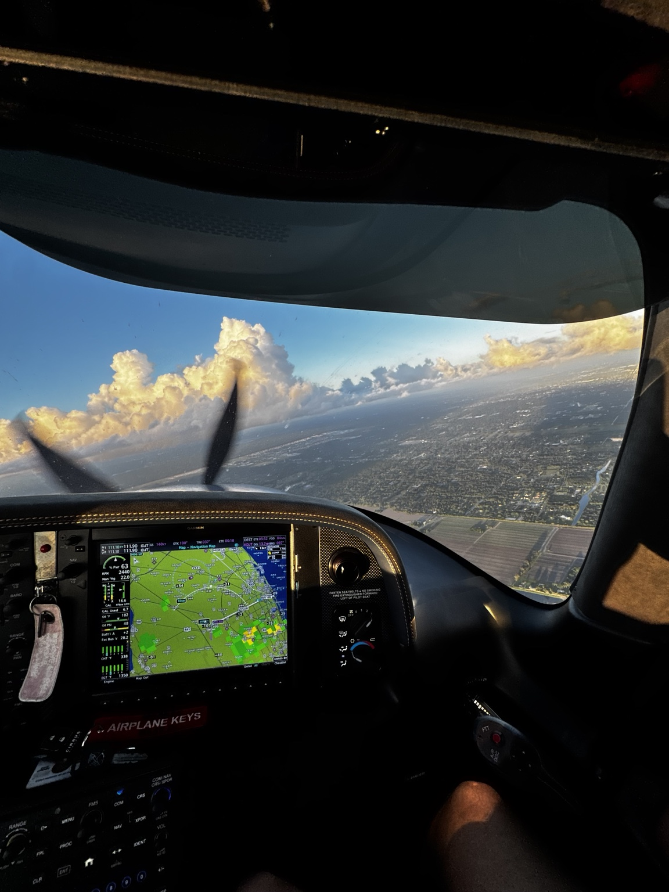

FOUNDER & FLIGHT INSTRUCTOR
Demetrios Makris
CFICFIICommercial Multi-EngineCirrus Experience
Demetrios founded South Florida Pilot to make flight training approachable, focused, and grounded in real-world decision-making. He works with students pursuing their ratings, preparing for checkrides, and building confidence in the cockpit.
With extensive experience instructing in Cessna, Piper, and Cirrus aircraft, he emphasizes strong fundamentals, sound aeronautical judgment, and personalized coaching.